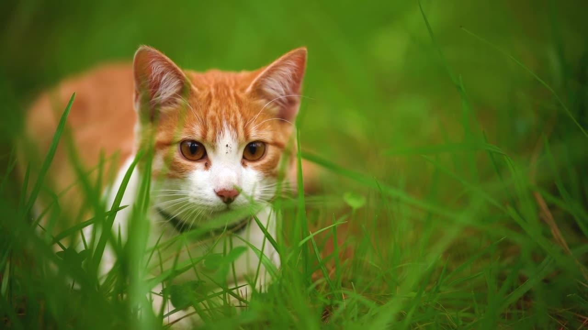
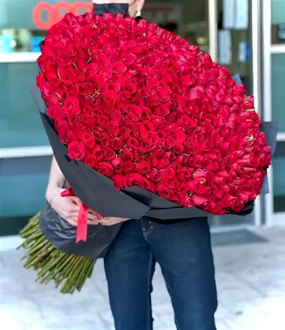

Gato Copón
Hola, me llamo Copón.


Toca la pantalla cuando hayas leído todo el texto.
Disclaimer: Esta animación se ha hecho con el único propósito de mandarte flores y que te rías un poco. Bueno.... Tengo que reconocer que esta tecnología la quiero entender y tengo que hacer pruebecitas.